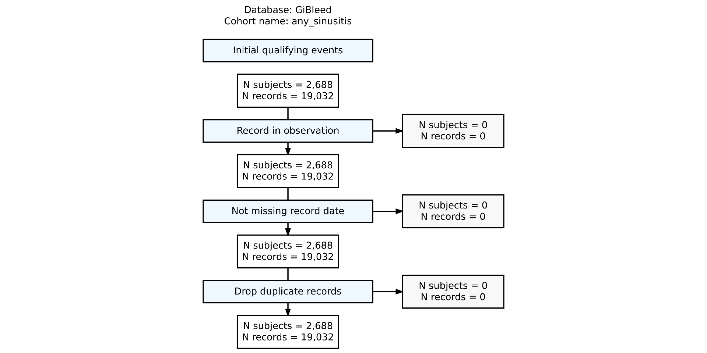
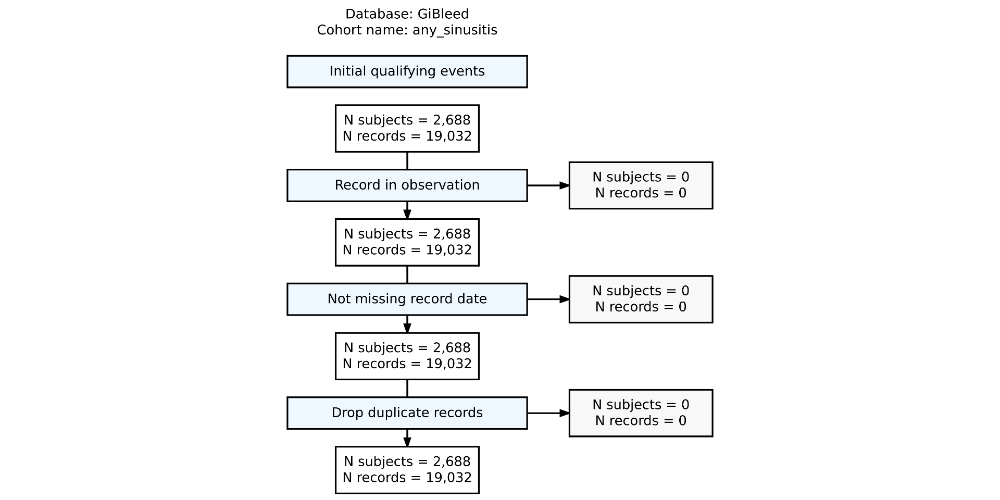
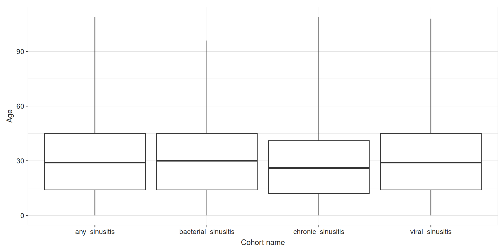
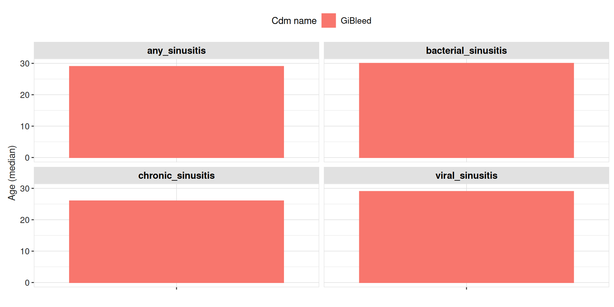
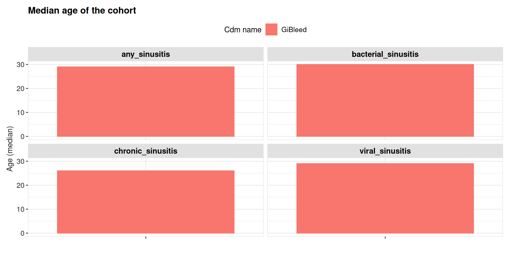
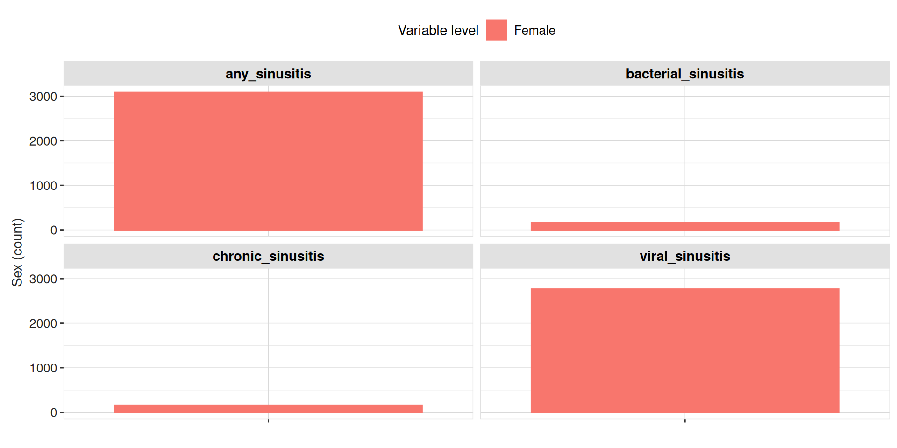
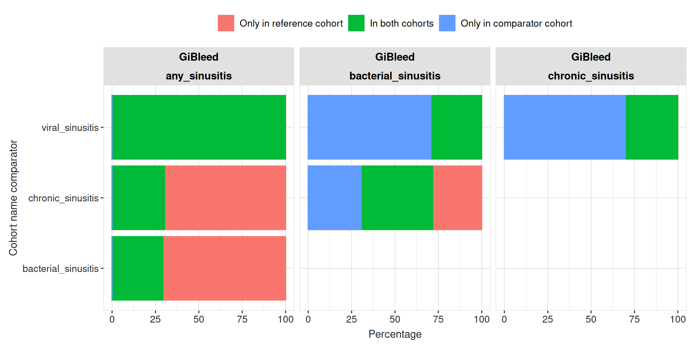
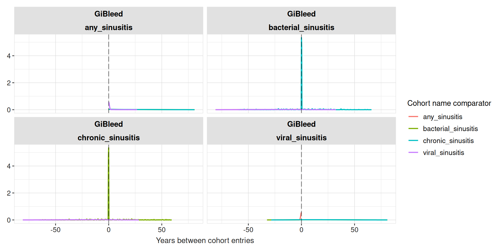

install.packages("CohortCharacteristics")CohortCharacteristics
A R package to Characterise cohorts
2026-05-29
CohortCharacteristics
Website
Cohort characteristics is on cran:
You can also install the development version from our github repo:
remotes::install_github("darwin-eu/CohortCharacteristics")The documentation and vignettes of the packages can be found in our page: https://darwin-eu.github.io/CohortCharacteristics/
Let’s get started
Load the packages that we will use for this presentation:
Let’s get started
Lets create a reference to the delphi dataset, remember that the results shown in this presentation is using a different dataset (GiBleed).
con <- dbConnect(drv = duckdb(dbdir = here("Databases", "delphi.duckdb")))
cdm <- cdmFromCon(
con = con,
cdmSchema = "main",
writeSchema = "results",
writePrefix = "cch_",
cdmName = "delphi"
)Let’s get started
Lets create some cohorts that we will use during the presentation:
cdm$sinusitis <- conceptCohort(
cdm = cdm,
name = "sinusitis",
conceptSet = list(
bacterial_sinusitis = 4294548L,
viral_sinusitis = 40481087L,
chronic_sinusitis = 257012L,
any_sinusitis = c(4294548L, 40481087L, 257012L)
),
exit = "event_start_date"
)
cdm$new_sinusitis <- cdm$sinusitis |>
requireSex(sex = "Female", name = "new_sinusitis") |>
requireAge(ageRange = c(0, 18))
cdm$conditions <- conceptCohort(
cdm = cdm,
conceptSet = list(
myocardial_infarction = c(4329847),
fracture = c(4048695, 4142905, 4278672, 4237458, 4230399, 40480160, 4066995, 4059173, 4134304),
allergy = c(4084167, 40486433, 4280726, 4048171),
infection = c(4116491, 433125, 4056621, 40481087, 4112343),
pneumonia = c(255848),
asthma = c(4051466, 317009)
),
exit = "event_start_date",
name = "conditions"
)
cdm$medications <- conceptCohort(
cdm = cdm,
conceptSet = list(
antineoplastic_and_immunomodulating_agents = c(1118088, 1118084, 40224132, 19010482, 40224805, 19007333, 1500211, 1305058, 1503184, 19134077, 1549786),
musculoskeletal_system = c(1118088, 1557272, 40162359, 1124300, 1115008, 40173590, 1118084, 42707627, 19019273, 19019979, 19078461, 19003953, 1112807, 1115171, 1177480),
antiinfectives_for_systemic_use = c(19129655, 1728416, 920293, 19074841, 920300, 920334, 19074843, 19075001, 19073183, 19073188, 1713671, 1729720, 19006318, 1778162, 46275444, 1717327, 1738521, 1741122, 1759842, 1713332, 1746114, 1768849, 46233710, 19133873, 46233988, 19133905),
nervous_system = c(708298, 701322, 723013, 1129625, 1110410, 753626, 1124957, 1102527, 1125315, 782043, 791967, 1119510, 19078219, 757627, 40220386, 740275, 40223774, 1154029, 1127078, 1127433, 40222846, 19057271, 40223768, 45892894, 705944, 715997, 19078924, 19076374, 19077572, 40229134, 19059056, 19016749, 40236446, 19074679, 742185, 40231925, 1112807, 35605858, 40162522, 782047, 19039298, 19059528, 836654, 836659, 19115351, 19023398, 19002770, 19123231, 19133768, 40165015),
dermatologicals = c(1129625, 1149380, 1124300, 836654, 1595799, 975125, 19008572),
respiratory_system = c(1129625, 1149196, 1149380, 1150770, 1150836, 1153428, 1107830, 1110410, 738818, 1124957, 40169216, 1125443, 1119510, 1137529, 1154615, 1154343, 40223821, 19019979, 19112599, 40223834, 43012036, 40229134, 19029476, 19078461, 40232448, 1177480, 1192710, 1343916, 1150771, 1150837, 1107882, 975125, 1174888, 40169281, 40228214, 40228230, 19125062)
),
name = "medications"
)Let’s get started
settings(cdm$sinusitis)$cohort_name[1] "any_sinusitis" "bacterial_sinusitis" "chronic_sinusitis" "viral_sinusitis" settings(cdm$conditions)$cohort_name[1] "allergy" "asthma" "fracture" "infection"
[5] "myocardial_infarction" "pneumonia" settings(cdm$medications)$cohort_name[1] "antiinfectives_for_systemic_use" "antineoplastic_and_immunomodulating_agents"
[3] "dermatologicals" "musculoskeletal_system"
[5] "nervous_system" "respiratory_system" Workflow
We have three types of functions:
summarise: these functions produce an standardised output to summarise a cohort. This standard output is called
<summarised_result>.plot: these functions produce plots from the
<summarised_result>object generated by the summarise functions.table: these functions produce tables from the
<summarised_result>object generated by the summarise functions.
Contents
summariseCohortCount
Use summariseCohortCount() to get cohort count for your cohort, pipe in below to your cohort table.
results <- cdm$sinusitis |>
summariseCohortCount()Its return the cohort counts in a summarised_result object format.
glimpse(results)Rows: 8
Columns: 13
$ result_id <int> 1, 1, 1, 1, 1, 1, 1, 1
$ cdm_name <chr> "GiBleed", "GiBleed", "GiBleed", "GiBleed", "GiBleed", "GiBleed", "GiBleed", "GiBleed"
$ group_name <chr> "cohort_name", "cohort_name", "cohort_name", "cohort_name", "cohort_name", "cohort_name"…
$ group_level <chr> "any_sinusitis", "any_sinusitis", "bacterial_sinusitis", "bacterial_sinusitis", "chronic…
$ strata_name <chr> "overall", "overall", "overall", "overall", "overall", "overall", "overall", "overall"
$ strata_level <chr> "overall", "overall", "overall", "overall", "overall", "overall", "overall", "overall"
$ variable_name <chr> "Number records", "Number subjects", "Number records", "Number subjects", "Number record…
$ variable_level <chr> NA, NA, NA, NA, NA, NA, NA, NA
$ estimate_name <chr> "count", "count", "count", "count", "count", "count", "count", "count"
$ estimate_type <chr> "integer", "integer", "integer", "integer", "integer", "integer", "integer", "integer"
$ estimate_value <chr> "19032", "2688", "939", "786", "825", "812", "17268", "2686"
$ additional_name <chr> "overall", "overall", "overall", "overall", "overall", "overall", "overall", "overall"
$ additional_level <chr> "overall", "overall", "overall", "overall", "overall", "overall", "overall", "overall"summariseCohortCount
Note
Yesterday we saw the function cohortCount() to see the counts of a <cohort_table>.
cohortCount(cdm$sinusitis)# A tibble: 4 × 3
cohort_definition_id number_records number_subjects
<int> <int> <int>
1 1 19032 2688
2 2 939 786
3 3 825 812
4 4 17268 2686The function summariseCohortCount() produces a similar result but in a standardised output (<summarised_result>).
tableCohortCount
To get a tidy table from the <summarised_result> object.
tableCohortCount(result = results)| CDM name | Variable name | Estimate name |
Cohort name
|
|||
|---|---|---|---|---|---|---|
| any_sinusitis | bacterial_sinusitis | chronic_sinusitis | viral_sinusitis | |||
| GiBleed | Number records | N | 19,032 | 939 | 825 | 17,268 |
| Number subjects | N | 2,688 | 786 | 812 | 2,686 | |
plotCohortCount
Use plotCohortCount() to visualise the plots in a ggplot2 object.
result <- summariseCohortAttrition(cohort = cdm$sinusitis, cohortId = 1)
plotCohortAttrition(result = result, type = "png")
summariseCohortAttrition
To get summarise cohort attrition, pipe in below to your cohort table.
results <- cdm$sinusitis |>
summariseCohortAttrition()It return the cohort attrition in a summarised_result object format.
glimpse(results)Rows: 64
Columns: 13
$ result_id <int> 1, 1, 1, 1, 1, 1, 1, 1, 1, 1, 1, 1, 1, 1, 1, 1, 2, 2, 2, 2, 2, 2, 2, 2, 2, 2, 2, 2, 2, 2…
$ cdm_name <chr> "GiBleed", "GiBleed", "GiBleed", "GiBleed", "GiBleed", "GiBleed", "GiBleed", "GiBleed", …
$ group_name <chr> "cohort_name", "cohort_name", "cohort_name", "cohort_name", "cohort_name", "cohort_name"…
$ group_level <chr> "any_sinusitis", "any_sinusitis", "any_sinusitis", "any_sinusitis", "any_sinusitis", "an…
$ strata_name <chr> "reason", "reason", "reason", "reason", "reason", "reason", "reason", "reason", "reason"…
$ strata_level <chr> "Initial qualifying events", "Initial qualifying events", "Initial qualifying events", "…
$ variable_name <chr> "number_records", "number_subjects", "excluded_records", "excluded_subjects", "number_re…
$ variable_level <chr> NA, NA, NA, NA, NA, NA, NA, NA, NA, NA, NA, NA, NA, NA, NA, NA, NA, NA, NA, NA, NA, NA, …
$ estimate_name <chr> "count", "count", "count", "count", "count", "count", "count", "count", "count", "count"…
$ estimate_type <chr> "integer", "integer", "integer", "integer", "integer", "integer", "integer", "integer", …
$ estimate_value <chr> "19032", "2688", "0", "0", "19032", "2688", "0", "0", "19032", "2688", "0", "0", "19032"…
$ additional_name <chr> "reason_id", "reason_id", "reason_id", "reason_id", "reason_id", "reason_id", "reason_id…
$ additional_level <chr> "1", "1", "1", "1", "2", "2", "2", "2", "3", "3", "3", "3", "4", "4", "4", "4", "1", "1"…summariseCohortAttrition
Note
Yesterday we saw the function attrition() to see the attrition of a <cohort_table>.
attrition(cdm$sinusitis)# A tibble: 16 × 7
cohort_definition_id number_records number_subjects reason_id reason excluded_records excluded_subjects
<int> <int> <int> <int> <chr> <int> <int>
1 1 19032 2688 1 Initial qualif… 0 0
2 1 19032 2688 2 Record in obse… 0 0
3 1 19032 2688 3 Not missing re… 0 0
4 1 19032 2688 4 Drop duplicate… 0 0
5 2 939 786 1 Initial qualif… 0 0
6 2 939 786 2 Record in obse… 0 0
7 2 939 786 3 Not missing re… 0 0
8 2 939 786 4 Drop duplicate… 0 0
9 3 825 812 1 Initial qualif… 0 0
10 3 825 812 2 Record in obse… 0 0
11 3 825 812 3 Not missing re… 0 0
12 3 825 812 4 Drop duplicate… 0 0
13 4 17268 2686 1 Initial qualif… 0 0
14 4 17268 2686 2 Record in obse… 0 0
15 4 17268 2686 3 Not missing re… 0 0
16 4 17268 2686 4 Drop duplicate… 0 0The function summariseCohortAttrition() produces a similar result but in a standardised output (<summarised_result>).
tableCohortAttrition
To get a tidy table from the <summarised_result> object.
tableCohortAttrition(result = results)| Reason |
Variable name
|
|||
|---|---|---|---|---|
| number_records | number_subjects | excluded_records | excluded_subjects | |
| GiBleed; any_sinusitis | ||||
| Initial qualifying events | 19,032 | 2,688 | 0 | 0 |
| Record in observation | 19,032 | 2,688 | 0 | 0 |
| Not missing record date | 19,032 | 2,688 | 0 | 0 |
| Drop duplicate records | 19,032 | 2,688 | 0 | 0 |
| GiBleed; bacterial_sinusitis | ||||
| Initial qualifying events | 939 | 786 | 0 | 0 |
| Record in observation | 939 | 786 | 0 | 0 |
| Not missing record date | 939 | 786 | 0 | 0 |
| Drop duplicate records | 939 | 786 | 0 | 0 |
| GiBleed; chronic_sinusitis | ||||
| Initial qualifying events | 825 | 812 | 0 | 0 |
| Record in observation | 825 | 812 | 0 | 0 |
| Not missing record date | 825 | 812 | 0 | 0 |
| Drop duplicate records | 825 | 812 | 0 | 0 |
| GiBleed; viral_sinusitis | ||||
| Initial qualifying events | 17,268 | 2,686 | 0 | 0 |
| Record in observation | 17,268 | 2,686 | 0 | 0 |
| Not missing record date | 17,268 | 2,686 | 0 | 0 |
| Drop duplicate records | 17,268 | 2,686 | 0 | 0 |
Plot cohort Attrition
You can create a flowchart of your cohort attrition like:
plotCohortAttrition(result = result, type = "png")
summariseCharacteristics
The main functionality of the package is to extract the characteristics of your cohort summariseCharacteristics().
results <- cdm$sinusitis |>
summariseCharacteristics()Its return the cohort characteristics in a <summarised_result> object format.
glimpse(results)Rows: 204
Columns: 13
$ result_id <int> 1, 1, 1, 1, 1, 1, 1, 1, 1, 1, 1, 1, 1, 1, 1, 1, 1, 1, 1, 1, 1, 1, 1, 1, 1, 1, 1, 1, 1, 1…
$ cdm_name <chr> "GiBleed", "GiBleed", "GiBleed", "GiBleed", "GiBleed", "GiBleed", "GiBleed", "GiBleed", …
$ group_name <chr> "cohort_name", "cohort_name", "cohort_name", "cohort_name", "cohort_name", "cohort_name"…
$ group_level <chr> "any_sinusitis", "any_sinusitis", "any_sinusitis", "any_sinusitis", "any_sinusitis", "an…
$ strata_name <chr> "overall", "overall", "overall", "overall", "overall", "overall", "overall", "overall", …
$ strata_level <chr> "overall", "overall", "overall", "overall", "overall", "overall", "overall", "overall", …
$ variable_name <chr> "Number records", "Number subjects", "Cohort start date", "Cohort start date", "Cohort s…
$ variable_level <chr> NA, NA, NA, NA, NA, NA, NA, NA, NA, NA, NA, NA, NA, NA, NA, NA, NA, NA, NA, "Female", "F…
$ estimate_name <chr> "count", "count", "min", "q25", "median", "q75", "max", "min", "q25", "median", "q75", "…
$ estimate_type <chr> "integer", "integer", "date", "date", "date", "date", "date", "date", "date", "date", "d…
$ estimate_value <chr> "19032", "2688", "1908-10-30", "1972-08-22", "1988-06-09", "2003-09-27", "2019-06-25", "…
$ additional_name <chr> "overall", "overall", "overall", "overall", "overall", "overall", "overall", "overall", …
$ additional_level <chr> "overall", "overall", "overall", "overall", "overall", "overall", "overall", "overall", …tableCharacteristics
To get a tidy table from the <summarised_result> object.
tableCharacteristics(result = results, header = "cohort_name")| CDM name | Variable name | Variable level | Estimate name |
Cohort name
|
|||
|---|---|---|---|---|---|---|---|
| any_sinusitis | bacterial_sinusitis | chronic_sinusitis | viral_sinusitis | ||||
| GiBleed | Number records | – | N | 19,032 | 939 | 825 | 17,268 |
| Number subjects | – | N | 2,688 | 786 | 812 | 2,686 | |
| Cohort start date | – | Median [Q25 - Q75] | 1988-06-09 [1972-08-22 - 2003-09-27] | 1988-03-18 [1972-11-06 - 2002-01-21] | 1985-11-07 [1971-10-25 - 2000-03-29] | 1988-07-28 [1972-09-14 - 2003-12-24] | |
| Range | 1908-10-30 to 2019-06-25 | 1912-05-27 to 2019-06-07 | 1911-12-12 to 2019-05-22 | 1908-10-30 to 2019-06-25 | |||
| Cohort end date | – | Median [Q25 - Q75] | 1988-06-09 [1972-08-22 - 2003-09-27] | 1988-03-18 [1972-11-06 - 2002-01-21] | 1985-11-07 [1971-10-25 - 2000-03-29] | 1988-07-28 [1972-09-14 - 2003-12-24] | |
| Range | 1908-10-30 to 2019-06-25 | 1912-05-27 to 2019-06-07 | 1911-12-12 to 2019-05-22 | 1908-10-30 to 2019-06-25 | |||
| Age | – | Median [Q25 - Q75] | 29 [14 - 45] | 30 [14 - 45] | 26 [12 - 41] | 29 [14 - 45] | |
| Mean (SD) | 31.06 (20.46) | 30.84 (19.94) | 28.33 (19.70) | 31.20 (20.51) | |||
| Range | 0 to 109 | 0 to 96 | 0 to 109 | 0 to 108 | |||
| Sex | Female | N (%) | 9,745 (51.20%) | 494 (52.61%) | 427 (51.76%) | 8,824 (51.10%) | |
| Male | N (%) | 9,287 (48.80%) | 445 (47.39%) | 398 (48.24%) | 8,444 (48.90%) | ||
| Prior observation | – | Median [Q25 - Q75] | 10,878 [5,393 - 16,518] | 11,017 [5,322 - 16,448] | 9,747 [4,688 - 15,280] | 10,930 [5,444 - 16,569] | |
| Mean (SD) | 11,525.45 (7,472.05) | 11,444.45 (7,279.79) | 10,530.56 (7,190.97) | 11,577.39 (7,492.56) | |||
| Range | 35 to 40,034 | 64 to 35,280 | 96 to 40,034 | 35 to 39,801 | |||
| Future observation | – | Median [Q25 - Q75] | 10,744 [5,234 - 16,446] | 10,786 [5,830 - 16,367] | 11,769 [6,476 - 16,921] | 10,707 [5,160 - 16,428] | |
| Mean (SD) | 11,393.21 (7,499.90) | 11,579.94 (7,614.42) | 12,088.90 (7,393.57) | 11,349.81 (7,497.31) | |||
| Range | 0 to 40,093 | 0 to 39,104 | 0 to 39,045 | 0 to 40,093 | |||
| Days in cohort | – | Median [Q25 - Q75] | 1 [1 - 1] | 1 [1 - 1] | 1 [1 - 1] | 1 [1 - 1] | |
| Mean (SD) | 1.00 (0.00) | 1.00 (0.00) | 1.00 (0.00) | 1.00 (0.00) | |||
| Range | 1 to 1 | 1 to 1 | 1 to 1 | 1 to 1 | |||
| Days to next record | – | Median [Q25 - Q75] | 1,823 [741 - 3,623] | 5,394 [2,542 - 9,636] | 9,246 [6,014 - 15,907] | 1,999 [839 - 3,927] | |
| Mean (SD) | 2,597.59 (2,562.23) | 6,988.53 (6,003.40) | 11,440.38 (7,047.17) | 2,818.79 (2,719.14) | |||
| Range | 14 to 21,228 | 90 to 32,894 | 3,276 to 23,368 | 41 to 24,947 | |||
Commonly used arguement for summarisedCharacteristics
stratato create stratification for the results.cohortIdfilter by cohort Id.ageGroupA list of age groups to return count for.tableIntersectcount/flag/date/dayscohortIntersectcount/flag/date/daysconceptIntersectcount/flag/date/days
ageGroup example
result <- summariseCharacteristics(cdm$sinusitis, ageGroup = list(c(0,10), c(11,18), c(19,150)))
tableCharacteristics(result = result, header = "cohort_name")ageGroup example
| CDM name | Variable name | Variable level | Estimate name |
Cohort name
|
|||
|---|---|---|---|---|---|---|---|
| any_sinusitis | bacterial_sinusitis | chronic_sinusitis | viral_sinusitis | ||||
| GiBleed | Number records | – | N | 19,032 | 939 | 825 | 17,268 |
| Number subjects | – | N | 2,688 | 786 | 812 | 2,686 | |
| Cohort start date | – | Median [Q25 - Q75] | 1988-06-09 [1972-08-22 - 2003-09-27] | 1988-03-18 [1972-11-06 - 2002-01-21] | 1985-11-07 [1971-10-25 - 2000-03-29] | 1988-07-28 [1972-09-14 - 2003-12-24] | |
| Range | 1908-10-30 to 2019-06-25 | 1912-05-27 to 2019-06-07 | 1911-12-12 to 2019-05-22 | 1908-10-30 to 2019-06-25 | |||
| Cohort end date | – | Median [Q25 - Q75] | 1988-06-09 [1972-08-22 - 2003-09-27] | 1988-03-18 [1972-11-06 - 2002-01-21] | 1985-11-07 [1971-10-25 - 2000-03-29] | 1988-07-28 [1972-09-14 - 2003-12-24] | |
| Range | 1908-10-30 to 2019-06-25 | 1912-05-27 to 2019-06-07 | 1911-12-12 to 2019-05-22 | 1908-10-30 to 2019-06-25 | |||
| Age | – | Median [Q25 - Q75] | 29 [14 - 45] | 30 [14 - 45] | 26 [12 - 41] | 29 [14 - 45] | |
| Mean (SD) | 31.06 (20.46) | 30.84 (19.94) | 28.33 (19.70) | 31.20 (20.51) | |||
| Range | 0 to 109 | 0 to 96 | 0 to 109 | 0 to 108 | |||
| Age group | 0 to 10 | N (%) | 3,566 (18.74%) | 184 (19.60%) | 176 (21.33%) | 3,206 (18.57%) | |
| 11 to 18 | N (%) | 2,491 (13.09%) | 113 (12.03%) | 129 (15.64%) | 2,249 (13.02%) | ||
| 19 to 150 | N (%) | 12,975 (68.17%) | 642 (68.37%) | 520 (63.03%) | 11,813 (68.41%) | ||
| Sex | Female | N (%) | 9,745 (51.20%) | 494 (52.61%) | 427 (51.76%) | 8,824 (51.10%) | |
| Male | N (%) | 9,287 (48.80%) | 445 (47.39%) | 398 (48.24%) | 8,444 (48.90%) | ||
| Prior observation | – | Median [Q25 - Q75] | 10,878 [5,393 - 16,518] | 11,017 [5,322 - 16,448] | 9,747 [4,688 - 15,280] | 10,930 [5,444 - 16,569] | |
| Mean (SD) | 11,525.45 (7,472.05) | 11,444.45 (7,279.79) | 10,530.56 (7,190.97) | 11,577.39 (7,492.56) | |||
| Range | 35 to 40,034 | 64 to 35,280 | 96 to 40,034 | 35 to 39,801 | |||
| Future observation | – | Median [Q25 - Q75] | 10,744 [5,234 - 16,446] | 10,786 [5,830 - 16,367] | 11,769 [6,476 - 16,921] | 10,707 [5,160 - 16,428] | |
| Mean (SD) | 11,393.21 (7,499.90) | 11,579.94 (7,614.42) | 12,088.90 (7,393.57) | 11,349.81 (7,497.31) | |||
| Range | 0 to 40,093 | 0 to 39,104 | 0 to 39,045 | 0 to 40,093 | |||
| Days in cohort | – | Median [Q25 - Q75] | 1 [1 - 1] | 1 [1 - 1] | 1 [1 - 1] | 1 [1 - 1] | |
| Mean (SD) | 1.00 (0.00) | 1.00 (0.00) | 1.00 (0.00) | 1.00 (0.00) | |||
| Range | 1 to 1 | 1 to 1 | 1 to 1 | 1 to 1 | |||
| Days to next record | – | Median [Q25 - Q75] | 1,823 [741 - 3,623] | 5,394 [2,542 - 9,636] | 9,246 [6,014 - 15,907] | 1,999 [839 - 3,927] | |
| Mean (SD) | 2,597.59 (2,562.23) | 6,988.53 (6,003.40) | 11,440.38 (7,047.17) | 2,818.79 (2,719.14) | |||
| Range | 14 to 21,228 | 90 to 32,894 | 3,276 to 23,368 | 41 to 24,947 | |||
Strata example
result <- cdm$sinusitis |>
addAge(ageGroup = list(c(0,10),c(11,18), c(19,150))) |>
summariseCharacteristics(cohortId = 1, strata = list("age_group"))
tableCharacteristics(result = result, header = "age_group") Strata example
| CDM name | Cohort name | Variable name | Variable level | Estimate name |
Age group
|
|||
|---|---|---|---|---|---|---|---|---|
| overall | 0 to 10 | 11 to 18 | 19 to 150 | |||||
| GiBleed | any_sinusitis | Number records | – | N | 19,032 | 3,566 | 2,491 | 12,975 |
| Number subjects | – | N | 2,688 | 1,979 | 1,580 | 2,638 | ||
| Cohort start date | – | Median [Q25 - Q75] | 1988-06-09 [1972-08-22 - 2003-09-27] | 1966-07-03 [1955-05-24 - 1976-04-29] | 1976-03-09 [1964-07-27 - 1985-04-18] | 1997-12-25 [1985-02-16 - 2008-08-03] | ||
| Range | 1908-10-30 to 2019-06-25 | 1908-10-30 to 1996-11-08 | 1920-07-14 to 2004-01-31 | 1928-05-28 to 2019-06-25 | ||||
| Cohort end date | – | Median [Q25 - Q75] | 1988-06-09 [1972-08-22 - 2003-09-27] | 1966-07-03 [1955-05-24 - 1976-04-29] | 1976-03-09 [1964-07-27 - 1985-04-18] | 1997-12-25 [1985-02-16 - 2008-08-03] | ||
| Range | 1908-10-30 to 2019-06-25 | 1908-10-30 to 1996-11-08 | 1920-07-14 to 2004-01-31 | 1928-05-28 to 2019-06-25 | ||||
| Age | – | Median [Q25 - Q75] | 29 [14 - 45] | 5 [2 - 8] | 14 [12 - 16] | 39 [29 - 51] | ||
| Mean (SD) | 31.06 (20.46) | 5.03 (3.14) | 14.45 (2.31) | 41.41 (16.25) | ||||
| Range | 0 to 109 | 0 to 10 | 11 to 18 | 19 to 109 | ||||
| Sex | Female | N (%) | 9,745 (51.20%) | 1,800 (50.48%) | 1,286 (51.63%) | 6,659 (51.32%) | ||
| Male | N (%) | 9,287 (48.80%) | 1,766 (49.52%) | 1,205 (48.37%) | 6,316 (48.68%) | |||
| Prior observation | – | Median [Q25 - Q75] | 10,878 [5,393 - 16,518] | 2,044 [1,010 - 3,014] | 5,456 [4,718 - 6,200] | 14,299 [10,606 - 18,916] | ||
| Mean (SD) | 11,525.45 (7,472.05) | 2,018.21 (1,153.26) | 5,460.94 (851.13) | 15,302.68 (5,934.54) | ||||
| Range | 35 to 40,034 | 35 to 4,013 | 4,018 to 6,939 | 6,938 to 40,034 | ||||
| Future observation | – | Median [Q25 - Q75] | 10,744 [5,234 - 16,446] | 18,964 [15,335 - 22,726] | 15,373 [12,090 - 19,364] | 7,267 [3,506 - 11,844] | ||
| Mean (SD) | 11,393.21 (7,499.90) | 19,541.70 (5,584.28) | 16,149.03 (5,556.48) | 8,240.66 (5,956.70) | ||||
| Range | 0 to 40,093 | 7,780 to 40,093 | 5,140 to 36,138 | 0 to 33,207 | ||||
| Days in cohort | – | Median [Q25 - Q75] | 1 [1 - 1] | 1 [1 - 1] | 1 [1 - 1] | 1 [1 - 1] | ||
| Mean (SD) | 1.00 (0.00) | 1.00 (0.00) | 1.00 (0.00) | 1.00 (0.00) | ||||
| Range | 1 to 1 | 1 to 1 | 1 to 1 | 1 to 1 | ||||
| Days to next record | – | Median [Q25 - Q75] | 1,823 [741 - 3,623] | 2,038 [830 - 4,311] | 2,053 [807 - 4,138] | 1,707 [690 - 3,329] | ||
| Mean (SD) | 2,597.59 (2,562.23) | 3,029.97 (2,995.78) | 2,908.02 (2,799.88) | 2,375.34 (2,302.13) | ||||
| Range | 14 to 21,228 | 14 to 21,165 | 14 to 19,666 | 14 to 21,228 | ||||
intersection with another table
you can get the count/flag/date/days with other tables.
result <- cdm$sinusitis |>
summariseCharacteristics(
tableIntersectCount = list(
"Number of visits prior year" = list(
tableName = "visit_occurrence", window = c(-365, 0)
)
),
cohortIntersectFlag = list(
"Conditions any time prior" = list(
targetCohortTable = "conditions", window = c(-Inf, 0)
),
"Medications prior year" = list(
targetCohortTable = "medications", window = c(-365, 0)
)
)
)
tableCharacteristics(result = result, header = "cohort_name")intersection with another table
you can get the count/flag/date//days with other tables
Intersections
Note
The arguments of the intersection functions match the PatientProfiles functions that we have just seen:
-
tableIntersectFlag->PatientProfiles::addTableIntersectFlag() -
tableIntersectCount->PatientProfiles::addTableIntersectCount() -
tableIntersectDays->PatientProfiles::addTableIntersectDays() -
tableIntersectDate->PatientProfiles::addTableIntersectDate() -
conceptIntersectFlag->PatientProfiles::addConceptIntersectFlag() -
conceptIntersectCount->PatientProfiles::addConceptIntersectCount() -
conceptIntersectDays->PatientProfiles::addConceptIntersectDays() -
conceptIntersectDate->PatientProfiles::addConceptIntersectDate() -
cohortIntersectFlag->PatientProfiles::addCohortIntersectFlag() -
cohortIntersectCount->PatientProfiles::addCohortIntersectCount() -
cohortIntersectDays->PatientProfiles::addCohortIntersectDays() -
cohortIntersectDate->PatientProfiles::addCohortIntersectDate()
Your turn
Can you characterise the new_sinusitis table in the cdm object and see whats the different in terms of patient characteristics compare to the sinusitis cohort?
💡 Click to see solution
result <- summariseCharacteristics(cdm$new_sinusitis)
tableCharacteristics(result = result, header = "cohort_name")Plots
you can obtain a plot of the variable you want from the summariseCharacteristics using the plotCharacteristics function
result <- cdm$sinusitis |>
summariseCharacteristics() |>
filter(variable_name == "Age" & strata_level == "overall")
plotCharacteristics(result = result, plotStyle = "boxplot")
Plots
result <- cdm$sinusitis |>
summariseCharacteristics() |>
filter(variable_name == "Age" & estimate_name == "median")
plotCharacteristics(result = result,
plotStyle = "barplot",
facet = "cohort_name",
colour = "cdm_name")
Plots
these are ggplot object and are compatible with the usual ggplot command for editing.
result <- cdm$sinusitis |>
summariseCharacteristics() |>
filter(variable_name == "Age" & estimate_name == "median")
plotCharacteristics(result = result,
plotStyle = "barplot",
facet = "cohort_name",
colour = "cdm_name") +
ggtitle("Median age of the cohort")
Your turn
Can you create a bar plot for gender the new_sinusitis table in the cdm object?
💡 Click to see solution
result <- cdm$new_sinusitis |>
summariseCharacteristics() |>
filter(variable_name == "Sex" & estimate_name == "count")
plotCharacteristics(result = result,
plotStyle = "barplot",
facet = "cohort_name",
colour = "variable_level")
SummariseLargeScaleCharacteristics
Sometimes we might want to summarise all clinical events for the cohorts for different time window, we can do this with SummariseLargeScaleCharacteristics
result <- cdm$sinusitis |>
summariseLargeScaleCharacteristics(
window = list(c(-Inf, -1), c(1, Inf)),
eventInWindow = "condition_occurrence",
minimumFrequency = 0.05
)
glimpse(result)Rows: 338
Columns: 13
$ result_id <int> 1, 1, 1, 1, 1, 1, 1, 1, 1, 1, 1, 1, 1, 1, 1, 1, 1, 1, 1, 1, 1, 1, 1, 1, 1, 1, 1, 1, 1, 1…
$ cdm_name <chr> "GiBleed", "GiBleed", "GiBleed", "GiBleed", "GiBleed", "GiBleed", "GiBleed", "GiBleed", …
$ group_name <chr> "cohort_name", "cohort_name", "cohort_name", "cohort_name", "cohort_name", "cohort_name"…
$ group_level <chr> "any_sinusitis", "any_sinusitis", "any_sinusitis", "any_sinusitis", "any_sinusitis", "an…
$ strata_name <chr> "overall", "overall", "overall", "overall", "overall", "overall", "overall", "overall", …
$ strata_level <chr> "overall", "overall", "overall", "overall", "overall", "overall", "overall", "overall", …
$ variable_name <chr> "Acute bronchitis", "Acute bronchitis", "Acute viral pharyngitis", "Acute viral pharyngi…
$ variable_level <chr> "-inf to -1", "-inf to -1", "-inf to -1", "-inf to -1", "-inf to -1", "-inf to -1", "-in…
$ estimate_name <chr> "count", "percentage", "count", "percentage", "count", "percentage", "count", "percentag…
$ estimate_type <chr> "integer", "percentage", "integer", "percentage", "integer", "percentage", "integer", "p…
$ estimate_value <chr> "13558", "71.24", "14471", "76.04", "1049", "5.51", "1423", "7.48", "992", "5.21", "973"…
$ additional_name <chr> "concept_id", "concept_id", "concept_id", "concept_id", "concept_id", "concept_id", "con…
$ additional_level <chr> "260139", "260139", "4112343", "4112343", "4310024", "4310024", "440086", "440086", "375…SummariseLargeScaleCharacteristics
tableLargeScaleCharacteristics for tidy table
tableTopLargeScaleCharacteristics(result = result, topConcepts = 5)
Cohort name
|
||||||||
|---|---|---|---|---|---|---|---|---|
any_sinusitis
|
bacterial_sinusitis
|
chronic_sinusitis
|
viral_sinusitis
|
|||||
| Top |
Window
|
|||||||
| -inf to -1 | 1 to inf | -inf to -1 | 1 to inf | -inf to -1 | 1 to inf | -inf to -1 | 1 to inf | |
| 1 | Viral sinusitis (40481087) 16045 (84.3%) |
Viral sinusitis (40481087) 16099 (85.1%) |
Viral sinusitis (40481087) 794 (84.6%) |
Viral sinusitis (40481087) 803 (85.9%) |
Viral sinusitis (40481087) 669 (81.1%) |
Viral sinusitis (40481087) 714 (86.8%) |
Viral sinusitis (40481087) 14582 (84.5%) |
Viral sinusitis (40481087) 14582 (85.0%) |
| 2 | Acute viral pharyngitis (4112343) 14471 (76.0%) |
Acute viral pharyngitis (4112343) 14034 (74.2%) |
Acute viral pharyngitis (4112343) 707 (75.3%) |
Acute viral pharyngitis (4112343) 684 (73.2%) |
Acute viral pharyngitis (4112343) 595 (72.1%) |
Acute viral pharyngitis (4112343) 636 (77.3%) |
Acute viral pharyngitis (4112343) 13169 (76.3%) |
Acute viral pharyngitis (4112343) 12714 (74.1%) |
| 3 | Acute bronchitis (260139) 13558 (71.2%) |
Acute bronchitis (260139) 13070 (69.1%) |
Acute bronchitis (260139) 673 (71.7%) |
Acute bronchitis (260139) 657 (70.3%) |
Acute bronchitis (260139) 575 (69.7%) |
Acute bronchitis (260139) 602 (73.2%) |
Acute bronchitis (260139) 12310 (71.3%) |
Acute bronchitis (260139) 11811 (68.8%) |
| 4 | Otitis media (372328) 13396 (70.4%) |
Osteoarthritis (80180) 12059 (63.8%) |
Otitis media (372328) 646 (68.8%) |
Osteoarthritis (80180) 584 (62.5%) |
Otitis media (372328) 560 (67.9%) |
Osteoarthritis (80180) 554 (67.3%) |
Otitis media (372328) 12190 (70.6%) |
Osteoarthritis (80180) 10921 (63.6%) |
| 5 | Laceration of foot (4109685) 1793 (9.4%) |
Esophagitis (30753) 1867 (9.9%) |
Fracture of clavicle (4237458) 93 (9.9%) |
Escherichia coli urinary tract infection (4116491) 90 (9.6%) |
Sinusitis (4283893) 503 (61.0%) |
Fracture of forearm (4278672) 82 (10.0%) |
Laceration of forearm (4155034) 1644 (9.5%) |
Diverticular disease (4266809) 1712 (10.0%) |
SummariseCohortOverlap
When creating multiple cohort, we might be interested in the overlap of individuals between those cohorts. SummariseCohortOverlap does this for you.
result <- cdm$sinusitis |>
summariseCohortOverlap()
glimpse(result)Rows: 72
Columns: 13
$ result_id <int> 1, 1, 1, 1, 1, 1, 1, 1, 1, 1, 1, 1, 1, 1, 1, 1, 1, 1, 1, 1, 1, 1, 1, 1, 1, 1, 1, 1, 1, 1…
$ cdm_name <chr> "GiBleed", "GiBleed", "GiBleed", "GiBleed", "GiBleed", "GiBleed", "GiBleed", "GiBleed", …
$ group_name <chr> "cohort_name_reference &&& cohort_name_comparator", "cohort_name_reference &&& cohort_na…
$ group_level <chr> "any_sinusitis &&& bacterial_sinusitis", "any_sinusitis &&& bacterial_sinusitis", "any_s…
$ strata_name <chr> "overall", "overall", "overall", "overall", "overall", "overall", "overall", "overall", …
$ strata_level <chr> "overall", "overall", "overall", "overall", "overall", "overall", "overall", "overall", …
$ variable_name <chr> "Only in reference cohort", "In both cohorts", "Only in comparator cohort", "Only in ref…
$ variable_level <chr> "Subjects", "Subjects", "Subjects", "Subjects", "Subjects", "Subjects", "Subjects", "Sub…
$ estimate_name <chr> "count", "count", "count", "count", "count", "count", "count", "count", "count", "count"…
$ estimate_type <chr> "integer", "integer", "integer", "integer", "integer", "integer", "integer", "integer", …
$ estimate_value <chr> "1902", "786", "0", "1876", "812", "0", "2", "2686", "0", "0", "786", "1902", "320", "46…
$ additional_name <chr> "overall", "overall", "overall", "overall", "overall", "overall", "overall", "overall", …
$ additional_level <chr> "overall", "overall", "overall", "overall", "overall", "overall", "overall", "overall", …SummariseCohortOverlap
Again can get a table with tableCohortOverlap
tableCohortOverlap(result)| Cohort name reference | Cohort name comparator | Estimate name |
Variable name
|
||
|---|---|---|---|---|---|
| Only in reference cohort | In both cohorts | Only in comparator cohort | |||
| GiBleed | |||||
| any_sinusitis | bacterial_sinusitis | N (%) | 1,902 (70.76%) | 786 (29.24%) | 0 (0.00%) |
| chronic_sinusitis | N (%) | 1,876 (69.79%) | 812 (30.21%) | 0 (0.00%) | |
| viral_sinusitis | N (%) | 2 (0.07%) | 2,686 (99.93%) | 0 (0.00%) | |
| bacterial_sinusitis | chronic_sinusitis | N (%) | 320 (28.27%) | 466 (41.17%) | 346 (30.57%) |
| viral_sinusitis | N (%) | 1 (0.04%) | 785 (29.21%) | 1,901 (70.75%) | |
| chronic_sinusitis | viral_sinusitis | N (%) | 2 (0.07%) | 810 (30.13%) | 1,876 (69.79%) |
plotCohortOverlap
Again can get a plot with plotCohortOverlap
plotCohortOverlap(result = result, uniqueCombinations = TRUE)
SummariseCohortTiming
When creating multiple cohort, we might be interested in timing of entry between cohorts. SummariseCohortTiming does this for you.
result <- cdm$sinusitis |>
summariseCohortTiming(restrictToFirstEntry = TRUE)
glimpse(result)Rows: 12,372
Columns: 13
$ result_id <int> 1, 1, 1, 1, 1, 1, 1, 1, 1, 1, 1, 1, 1, 1, 1, 1, 1, 1, 1, 1, 1, 1, 1, 1, 1, 1, 1, 1, 1, 1…
$ cdm_name <chr> "GiBleed", "GiBleed", "GiBleed", "GiBleed", "GiBleed", "GiBleed", "GiBleed", "GiBleed", …
$ group_name <chr> "cohort_name_reference &&& cohort_name_comparator", "cohort_name_reference &&& cohort_na…
$ group_level <chr> "any_sinusitis &&& bacterial_sinusitis", "any_sinusitis &&& bacterial_sinusitis", "any_s…
$ strata_name <chr> "overall", "overall", "overall", "overall", "overall", "overall", "overall", "overall", …
$ strata_level <chr> "overall", "overall", "overall", "overall", "overall", "overall", "overall", "overall", …
$ variable_name <chr> "number records", "number subjects", "days_between_cohort_entries", "days_between_cohort…
$ variable_level <chr> NA, NA, NA, NA, NA, NA, NA, "density_001", "density_002", "density_003", "density_004", …
$ estimate_name <chr> "count", "count", "min", "q25", "median", "q75", "max", "density_x", "density_x", "densi…
$ estimate_type <chr> "integer", "integer", "integer", "integer", "integer", "integer", "integer", "numeric", …
$ estimate_value <chr> "786", "786", "0", "1598", "7240", "12924", "33143", "0", "57.7640900195695", "115.52818…
$ additional_name <chr> "overall", "overall", "overall", "overall", "overall", "overall", "overall", "overall", …
$ additional_level <chr> "overall", "overall", "overall", "overall", "overall", "overall", "overall", "overall", …SummariseCohortOverlap
Again can get a table with tableCohortTiming
tableCohortTiming(result = result,
timeScale = "years",
uniqueCombinations = FALSE)| Cohort name reference | Cohort name comparator | Variable name | Estimate name | Estimate value |
|---|---|---|---|---|
| GiBleed | ||||
| any_sinusitis | bacterial_sinusitis | number records | N | 786 |
| number subjects | N | 786 | ||
| years_between_cohort_entries | Median [Q25 - Q75] | 19.82 [4.38 - 35.38] | ||
| Range | 0.00 to 90.74 | |||
| chronic_sinusitis | number records | N | 812 | |
| number subjects | N | 812 | ||
| years_between_cohort_entries | Median [Q25 - Q75] | 17.70 [3.36 - 35.00] | ||
| Range | 0.00 to 101.63 | |||
| viral_sinusitis | number records | N | 2,686 | |
| number subjects | N | 2,686 | ||
| years_between_cohort_entries | Median [Q25 - Q75] | 0.00 [0.00 - 0.00] | ||
| Range | 0.00 to 47.65 | |||
| bacterial_sinusitis | any_sinusitis | number records | N | 786 |
| number subjects | N | 786 | ||
| years_between_cohort_entries | Median [Q25 - Q75] | -19.82 [-35.38 - -4.38] | ||
| Range | -90.74 to 0.00 | |||
| chronic_sinusitis | number records | N | 466 | |
| number subjects | N | 466 | ||
| years_between_cohort_entries | Median [Q25 - Q75] | 0.10 [0.06 - 0.19] | ||
| Range | -71.77 to 90.55 | |||
| viral_sinusitis | number records | N | 785 | |
| number subjects | N | 785 | ||
| years_between_cohort_entries | Median [Q25 - Q75] | -19.73 [-35.17 - -3.89] | ||
| Range | -90.74 to 47.65 | |||
| chronic_sinusitis | any_sinusitis | number records | N | 812 |
| number subjects | N | 812 | ||
| years_between_cohort_entries | Median [Q25 - Q75] | -17.70 [-35.00 - -3.36] | ||
| Range | -101.63 to 0.00 | |||
| bacterial_sinusitis | number records | N | 466 | |
| number subjects | N | 466 | ||
| years_between_cohort_entries | Median [Q25 - Q75] | -0.10 [-0.19 - -0.06] | ||
| Range | -90.55 to 71.77 | |||
| viral_sinusitis | number records | N | 810 | |
| number subjects | N | 810 | ||
| years_between_cohort_entries | Median [Q25 - Q75] | -17.64 [-34.40 - -3.07] | ||
| Range | -101.63 to 47.54 | |||
| viral_sinusitis | any_sinusitis | number records | N | 2,686 |
| number subjects | N | 2,686 | ||
| years_between_cohort_entries | Median [Q25 - Q75] | 0.00 [0.00 - 0.00] | ||
| Range | -47.65 to 0.00 | |||
| bacterial_sinusitis | number records | N | 785 | |
| number subjects | N | 785 | ||
| years_between_cohort_entries | Median [Q25 - Q75] | 19.73 [3.89 - 35.17] | ||
| Range | -47.65 to 90.74 | |||
| chronic_sinusitis | number records | N | 810 | |
| number subjects | N | 810 | ||
| years_between_cohort_entries | Median [Q25 - Q75] | 17.64 [3.07 - 34.40] | ||
| Range | -47.54 to 101.63 | |||
plotCohortOverlap
Again can get a plot with plotCohortTiming
plotCohortTiming(
result = result,
plotType = "boxplot",
timeScale = "years",
uniqueCombinations = FALSE
)
plotCohortOverlap
Or return a densityplot
plotCohortTiming(
result = result,
plotType = "densityplot",
timeScale = "years",
uniqueCombinations = FALSE
)
Your Turn
Can you get the large scale characteristics for drug exposure table with for the new_sinusitis cohort table with time window anytime prior.
💡 Click to see solution
result <- cdm$new_sinusitis |>
summariseLargeScaleCharacteristics(
window = list(c(-Inf, -1)),
eventInWindow = "drug_exposure",
minimumFrequency = 0.05
)
tableTopLargeScaleCharacteristics(result = result, topConcepts = 5)| Top |
Cohort name
|
|||
|---|---|---|---|---|
| any_sinusitis | bacterial_sinusitis | chronic_sinusitis | viral_sinusitis | |
| 1 | poliovirus vaccine, inactivated (40213160) 2311 (74.9%) |
poliovirus vaccine, inactivated (40213160) 125 (77.6%) |
poliovirus vaccine, inactivated (40213160) 124 (78.0%) |
poliovirus vaccine, inactivated (40213160) 2062 (74.5%) |
| 2 | Aspirin 81 MG Oral Tablet (19059056) 1697 (55.0%) |
Aspirin 81 MG Oral Tablet (19059056) 91 (56.5%) |
Doxycycline Monohydrate 50 MG Oral Tablet (46233988) 15 (9.4%) |
Aspirin 81 MG Oral Tablet (19059056) 1528 (55.2%) |
| 3 | varicella virus vaccine (40213251) 290 (9.4%) |
varicella virus vaccine (40213251) 16 (9.9%) |
Ibuprofen 100 MG Oral Tablet (19019979) 14 (8.8%) |
varicella virus vaccine (40213251) 256 (9.3%) |
| 4 | Ibuprofen 100 MG Oral Tablet (19019979) 272 (8.8%) |
Ibuprofen 100 MG Oral Tablet (19019979) 15 (9.3%) |
{7 (Inert Ingredients 1 MG Oral Tablet) / 21 (Mestranol 0.05 MG / Norethindrone 1 MG Oral Tablet) } Pack [Norinyl 1+50 28 Day] (19128065) 11 (6.9%) |
Ibuprofen 100 MG Oral Tablet (19019979) 243 (8.8%) |
| 5 | {7 (Inert Ingredients 1 MG Oral Tablet) / 21 (Mestranol 0.05 MG / Norethindrone 1 MG Oral Tablet) } Pack [Norinyl 1+50 28 Day] (19128065) 171 (5.5%) |
Amoxicillin 250 MG Oral Capsule (19073183) 9 (5.6%) |
Cefaclor 250 MG Oral Capsule (19074843) 8 (5.0%) |
{7 (Inert Ingredients 1 MG Oral Tablet) / 21 (Mestranol 0.05 MG / Norethindrone 1 MG Oral Tablet) } Pack [Norinyl 1+50 28 Day] (19128065) 153 (5.5%) |
CohortCharacteristics
Real World Evidence Summer School 2026